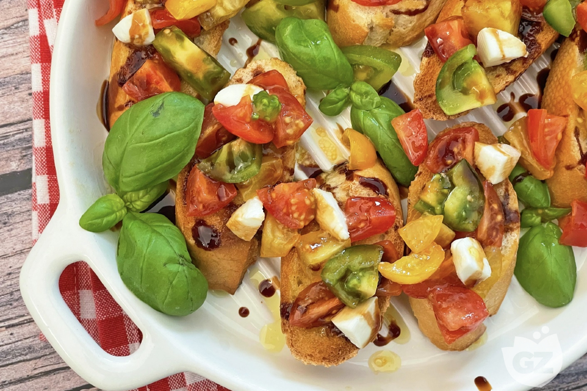

Balsamic tomato bruschetta

Description
Easy and quick to prepare, the balsamic tomato bruschetta recipe is perfect as an appetizer or a fresh second course. Feel free to add other ingredients like olives, capers, anchovy fillets, tuna, feta cheese or diced avocado. For a perfect result, allow the seasoned tomatoes with basil, oil, salt, and pepper to rest: the resulting delicious sauce complements the toasted bread slices, providing a tastier and more aromatic outcome!
Ingredients
Bruschetta
- Bread 8 slices
- Garlic 1 clove
- Extra virgin olive oil to taste
- Cherry tomatoes (250 g)
- Basil
Marinade
- Extra virgin olive oil (100 ml)
- Balsamic vinegar (25 ml)
- Basil
- Salt (3 g)
- Ground black pepper 1 pinch
Assembly
- Mozzarelline ciliegine cheese (70 g)
- Basil (30 g)
- Extra virgin olive oil (30 ml)
- Balsamic vinegar glaze to taste
- Salt to taste
Steps
- In a large bowl combine chopped tomatoes, olive oil, balsamic vinegar, basil, salt and pepper. Allow it to sit for at least 10 minutes to enhance the flavors.
- Slice the bread into 3/4-inch slices. Preheat the grill and place the slices on it. Toast them on both sides for about 5 to 10 minutes or until brown.
- Lightly brush both sides of the bread slices with oil. Cut a peeled garlic clove in half lengthwise and rub the cut side lightly over the toasted bread to add a hint of garlic flavor. For a stronger garlic taste, rub in a little more garlic if desired.
- Meanwhile, in a separate bowl, mix 2 tsp of extra-virgin olive oil, a few drops of balsamic vinegar, and a pinch of salt.
- Arrange the bread slices on a platter or cutting board. Take the bowl with the tomatoes and evenly distribute the tomato mixture over the bread slices.
- Top with mozzarella cherries and fresh basil leaves.
- Drizzle with the extra-virgin olive oil and balsamic vinegar dressing, and add a few drops of vinegar glaze for extra flavor.